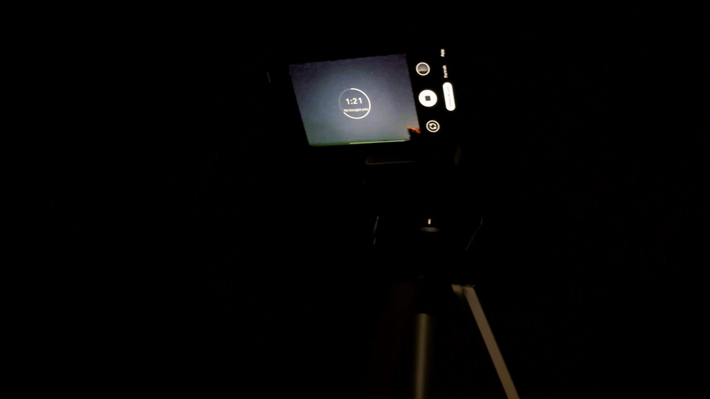

Au tout début, il ne faut pas forcément prendre un télescope avec système de suivi, car ces derniers sont très souvent lourds et compliqués à mettre en place. C’est le meilleur moyen de se désintéresser. Non, pour bien commencer, trouvez-vous un petit trépied et utilisez-le avec votre téléphone en mode pro.

Voici ce que j'utilise la plupart du temps